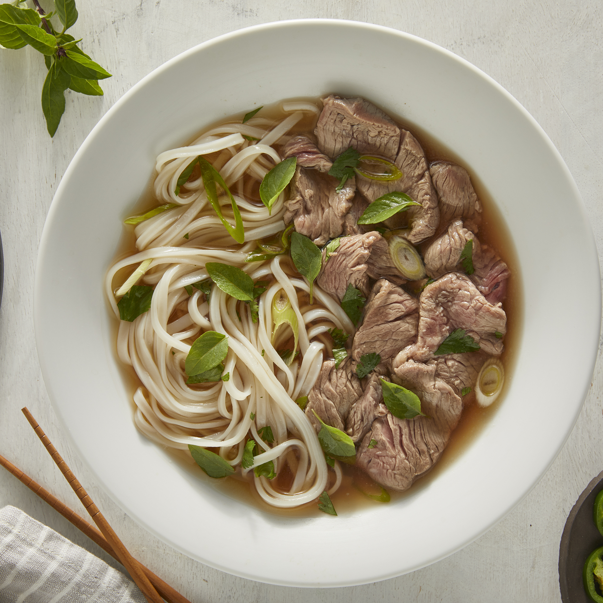

Authentic Pho

Description
Pho is a soup consisting of bone broth, rice noodles, thinly-sliced meat
(in this recipe, it's beef), and fresh garnishes.
As with many foods, the origins of pho are unknown. It is believed to have
been created in northern Vietnam in the early 20th century. It gained
popularity in many countries after the Vietnam War.
Ingredients
- 4 pounds beef soup bones (shank and knee)
- 1 medium onion, unpeeled and cut in half
- 5 slices fresh ginger
- 1 tablespoon salt
- 2 pods star anise
- 2.5 tablespoons fish sauce
- 4 quarts water
- 1 (8 ounce) package dried rice noodles
- 1.5 pounds beef top sirloin, thinly sliced
- .5 cup chopped cilantro
- 1 tablespoon chopped green onion
- 1.5 cups bean sprouts
- 1 bunch Thai basil
- 1 medium lime, cut into 4 wedges
- .25 cup hoisin sauce (Optional)
- .25 cup chile-garlic sauce (such as Sriracha®) (Optional)
Steps
- Preheat the oven to 425 degrees F (220 degrees C).
-
Place beef bones on a baking sheet and roast in the preheated oven until
browned, about 1 hour.
-
Place onion halves on a second baking sheet and roast on another rack
until blackened and soft, about 45 minutes.
-
Transfer beef bones and onion halves to a large stockpot. Add ginger,
salt, star anise, fish sauce, and 4 quarts water; bring to a boil.
Reduce heat to low and simmer for 6 to 10 hours. Strain the broth into a
saucepan and set aside.
-
Place rice noodles in a large bowl filled with room temperature water.
Let soak for 1 hour. Drain.
-
When noodles have soaked for 1 hour, heat up the reserved broth by
bringing it to a simmer.
-
Bring a large pot of water to a boil. Cook the noodles in the boiling
water for 1 minute. Drain.
-
Divide noodles among 4 serving bowls; top with sirloin, cilantro, and
green onion. Ladle hot broth over the top. Stir and let sit until beef
is partially cooked and no longer pink, 1 to 2 minutes.
-
Serve with bean sprouts, Thai basil, lime wedges, hoisin sauce, and
chile-garlic sauce on the side.